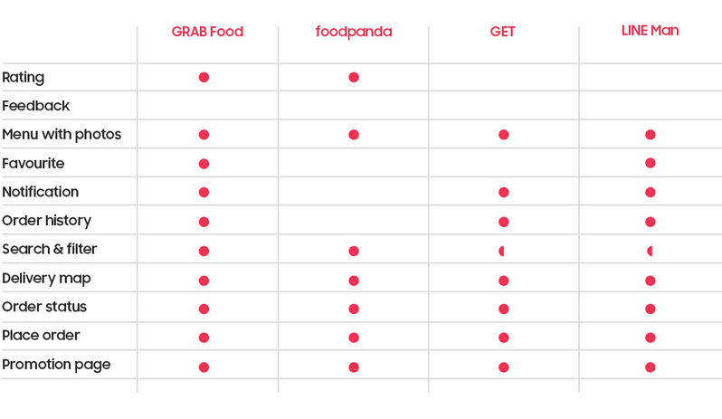

yumm application |
yumm is the application aims to serve best food delivery experience to customers. Red colour is their main brand colours which they believe that the hot tone appetize more than those of cold ones.
Gather Requirements
At the very first step, I gathered both general and specific requirements from clients towards what they want. In general, those requirements are
Competitors Research
There are, to name only few, brands most of us have already known, they are LINE Man, foodpanda, Grab Food, and Get. These four top-notch needed to be studied first towards what they are good at and what shall be improved.
Set up Questionnairs
Take a further step with prepared questionaires. Real users are being given the questions and I waited for their answers. Some of those questions are
From 50 testers, it shows that
Persona
Representation of goals to be achieved by prospect users
and
sometimes we received user criteria from user requirements.
They are looking for
Common frustrations
User Task Flow
High Fidelity Wireframing
Overall dummy interface to indicate where items will be place with no visual in it.
UI Design
Landing, Registration, and Homepage
First, they need to create account yet if users have accounts already, then they can log in through app account, Facebook, or Google email. Divided into categories users can explore and provide coupons at the end of the page.
Once menu clicked, then go to restaurant page (giving bigger chance to order related foods).
** Promotion always on top ** Then move on to add-on topping, if any.
Cart, Track Order, and Profile Page
On the Cart Page, this allows user to use coupon if the have and the total will be recalculated.
After payment finished, app will re-direct user to the map page in order to enable client to track their order and also make a call.
Optionally, user can track their order via profile section and see notifications.
Want to disscuss more? Get in touch and let’s make something great together!
Made with love by Chatsuree Siripolsomsuk. © All rights reserved.